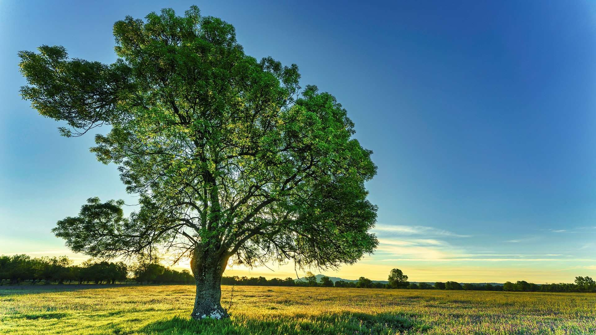

Táto časť webu patrí projektu ANASTASIA. Nie ako ponuka riešení, ale ako priestor, kde veci nemusia byť tlačené, vysvetľované ani riadené. Zdravý svet nie je ideál, ku ktorému sa treba dopracovať. Nie je to cieľ, ktorý treba dosiahnuť prácou na sebe. Je to možnosť, ktorá sa objavuje vtedy, keď prestaneme mať pocit, že so sebou musíme niečo robiť.
Vstúpte do zdravého svetaRolujte
Manifest
Kde veci nemusia byť urýchľované, vysvetľované ani riadené.

Kolekcia
Programy
16 týždňov, ktoré môžu zmeniť váš pohľad na zdravie, energiu a starnutie.
16 týždňov, ktoré môžu zmeniť váš pohľad na zdravie, energiu a starnutie.

Svet
Kontakt
Otázka k produktu, programu alebo konzultácii? Tu je priestor pre vás.